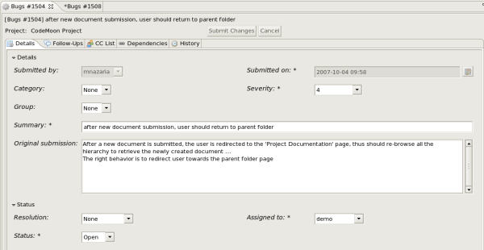

Copyright © Xerox Corporation, CodeX Team, 2001-2006. All Rights Reserved
Après avoir sélectionner un outil de suivi, double cliquer dessus pour faire apparaître la liste de ses artéfacts.
 |
Puis, double-cliquer à nouveau sur un artéfact de la liste pour voir les détails de l'artéfact, et pour le modifier !
|  |
Profitez de CodeX !
Copyright © Xerox Corporation, CodeX Team, 2001-2006. All Rights Reserved